Akira é um anime de ficção científica dirigido por Katsuhiro Otomo e baseado em seu próprio mangá. Lançado em 1988, é considerado um dos melhores animes de todos os tempos.
Bleach
Anime de ação e aventura
Bleach é um anime que segue as aventuras de Ichigo Kurosaki, um jovem que acidentalmente adquire poderes de um Ceifador de Almas.
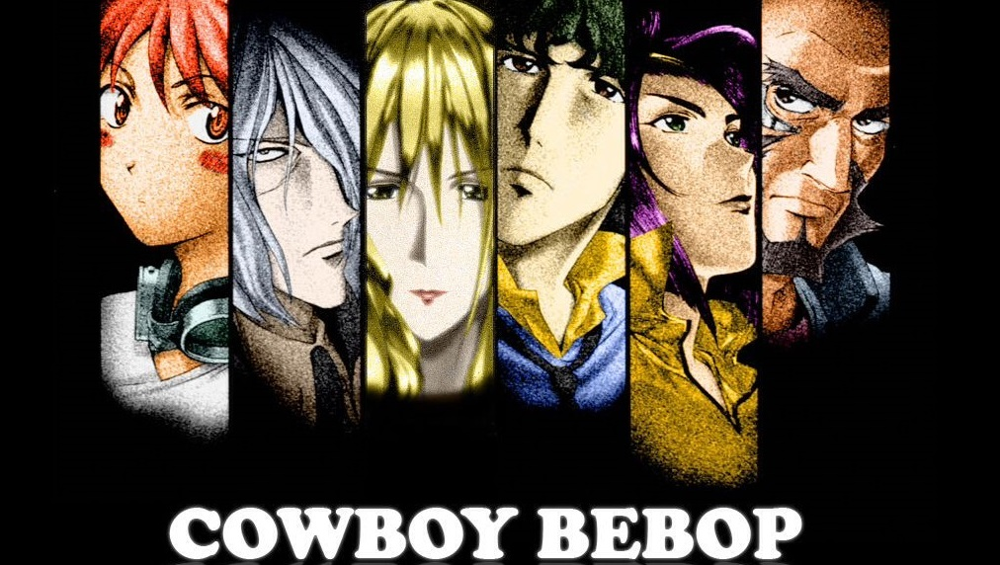
Cowboy Bebop
Anime de ficção científica e ação
Cowboy Bebop é um anime clássico que segue as aventuras de uma equipe de caçadores de recompensas no espaço.
Death Note
Anime de suspense e mistério
Death Note segue a história de Light Yagami, um estudante do ensino médio que encontra um caderno sobrenatural que lhe dá o poder de matar qualquer pessoa cujo nome ele escrever nele.
Demon Slayer
Anime de ação e sobrenatural
Demon Slayer segue a jornada de Tanjiro Kamado, um jovem que se torna um caçador de demônios após sua família ser massacrada e sua irmã Nezuko ser transformada em um demônio.
Dragon Ball
Anime de ação e aventura
Dragon Ball segue as aventuras de Son Goku desde a sua infância até a idade adulta enquanto ele treina artes marciais e explora o mundo em busca das esferas do dragão.
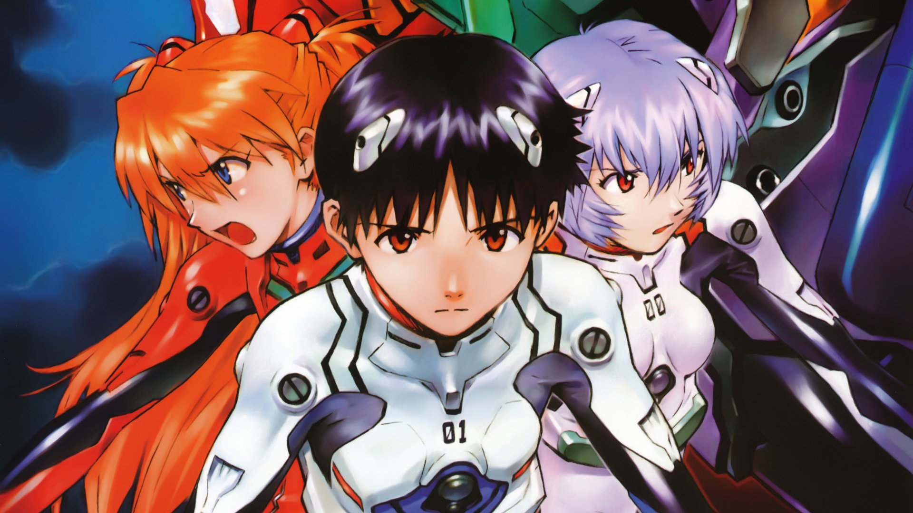
Evangelion
Anime de mecha e psicológico
Neon Genesis Evangelion é uma série de anime que segue os pilotos de gigantes robôs de combate enquanto enfrentam ameaças existenciais e lidam com suas próprias questões emocionais.
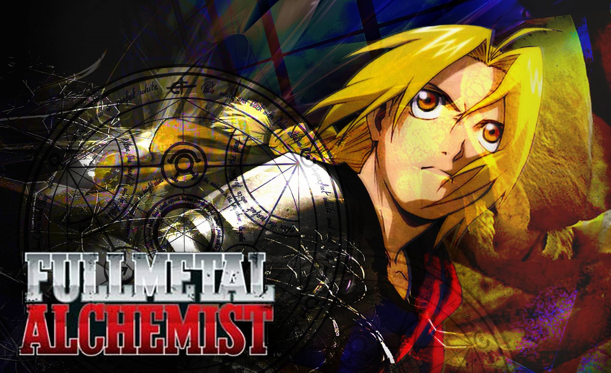
Fullmetal Alchemist
Anime de aventura e fantasia
Fullmetal Alchemist segue os irmãos Edward e Alphonse Elric enquanto buscam a Pedra Filosofal para restaurar seus corpos após uma tentativa de ressuscitar sua mãe resultar em desastre.
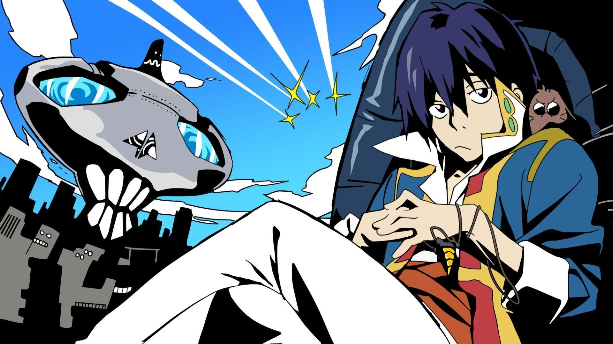
Gurren Lagann
Anime de mecha e ação
Gurren Lagann segue Simon e Kamina em sua jornada para superar adversidades e enfrentar o governo tirânico que controla a humanidade, usando mechas gigantes chamados Gunmen.
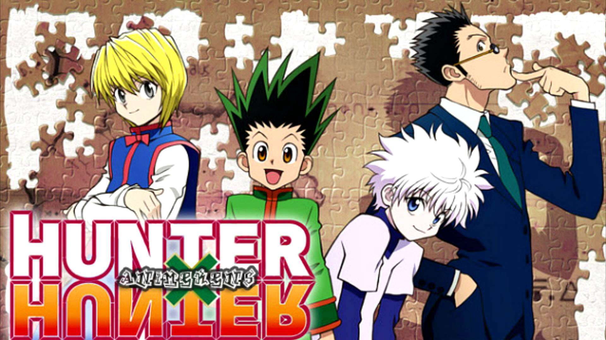
Hunter x Hunter
Anime de aventura e fantasia
Hunter x Hunter segue Gon Freecss em sua jornada para se tornar um Hunter e encontrar seu pai, que é um dos Hunters mais famosos do mundo.
Inuyasha
Anime de aventura e sobrenatural
Inuyasha segue as aventuras de Kagome Higurashi, que viaja no tempo para o Japão feudal, onde conhece o meio-demônio Inuyasha e juntos buscam as Jóias de Shikon.
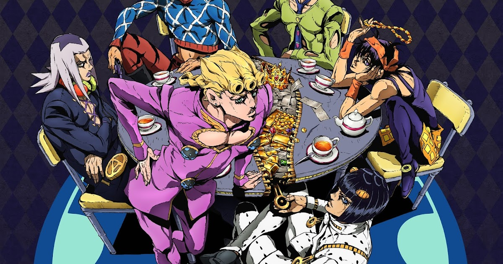
JoJo's Bizarre Adventure
Anime de ação e sobrenatural
JoJo's Bizarre Adventure segue a família Joestar em várias gerações enquanto eles enfrentam vilões com habilidades sobrenaturais usando seus próprios poderes especiais.
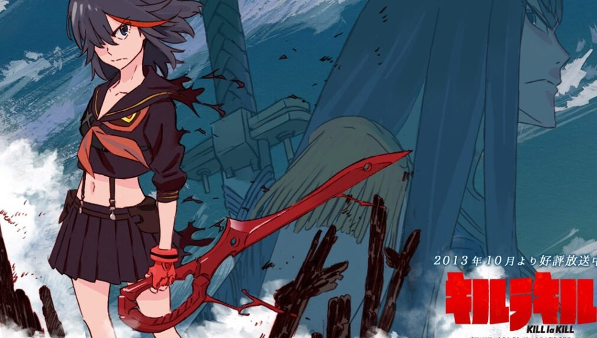
Kill la Kill
Anime de ação e comédia
Kill la Kill segue Ryuko Matoi em sua busca pela verdade por trás do assassinato de seu pai, enquanto luta contra membros da elite estudantil usando um uniforme escolar especial.
Love Live!
Anime de música e slice of life
Love Live! segue um grupo de estudantes do ensino médio que formam um grupo de idols para salvar sua escola da possível fusão e atraem novos alunos através de performances.
My Hero Academia
Anime de ação e super-heróis
My Hero Academia segue Izuku Midoriya, um menino sem poderes em um mundo onde a maioria das pessoas possui superpoderes, enquanto ele treina para se tornar o maior herói.
Naruto
Anime de ação e aventura
Naruto segue a jornada de Naruto Uzumaki, um jovem ninja que busca se tornar o líder de sua aldeia e obter o reconhecimento de seus colegas.
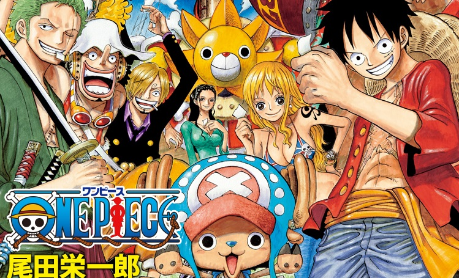
One Piece
Anime de aventura e piratas
One Piece segue Monkey D. Luffy e sua tripulação enquanto eles procuram pelo One Piece, o maior tesouro do mundo, e enfrentam poderosas organizações e piratas rivais.
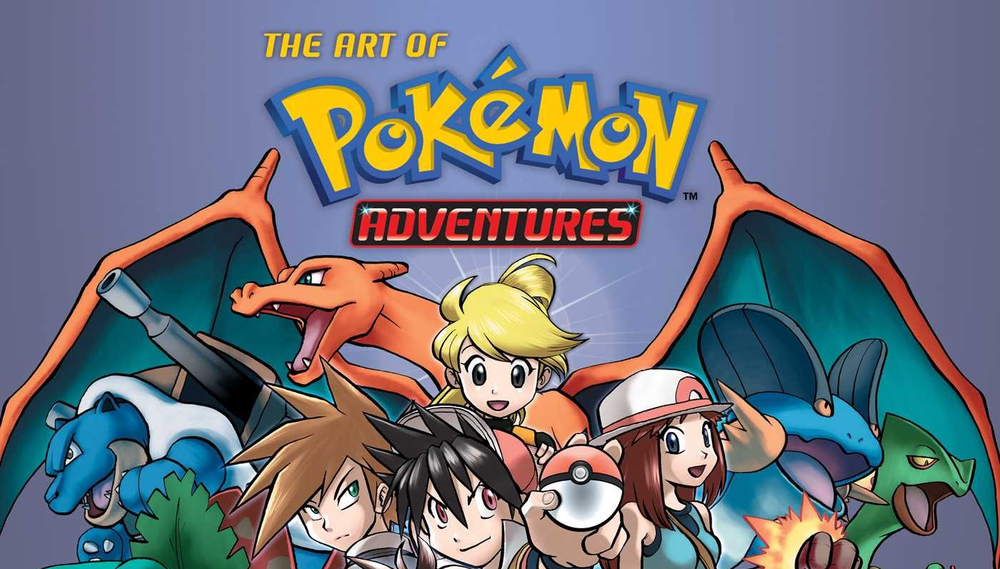
Pokemon
Anime de aventura e fantasia
Pokemon segue as aventuras de Ash Ketchum em sua jornada para se tornar um mestre Pokemon enquanto viaja pelo mundo capturando e treinando criaturas conhecidas como Pokemon.
Quintessential Quintuplets
Anime de romance e comédia
Quintessential Quintuplets segue a história de Futaro Uesugi, um tutor que é contratado para ensinar cinco irmãs com personalidades diferentes e, eventualmente, se apaixona por uma delas.
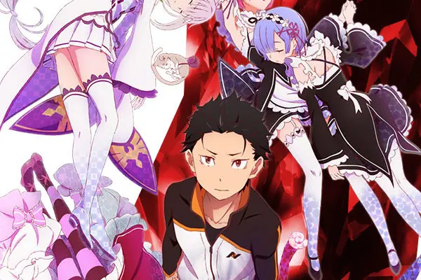
Re:Zero
Anime de fantasia e drama
Re:Zero segue Subaru Natsuki, um adolescente que é transportado para um mundo de fantasia, onde descobre que tem a habilidade de voltar no tempo sempre que morre.
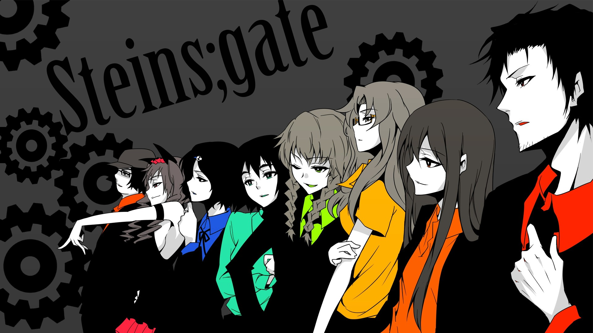
Steins;Gate
Anime de ficção científica e viagem no tempo
Steins;Gate segue a história de Rintarou Okabe e seu grupo de amigos enquanto eles descobrem como enviar mensagens para o passado e as consequências de suas ações.
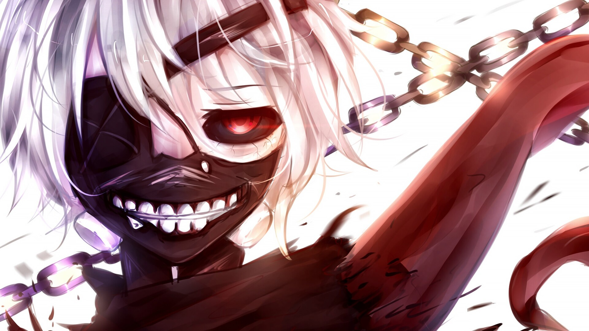
Tokyo Ghoul
Anime de horror e sobrenatural
Tokyo Ghoul segue a história de Ken Kaneki, um jovem que se torna meio-ghoul após ser atacado por um. Ele luta para se adaptar à sua nova vida enquanto enfrenta outros ghouls e a organização que os caça.
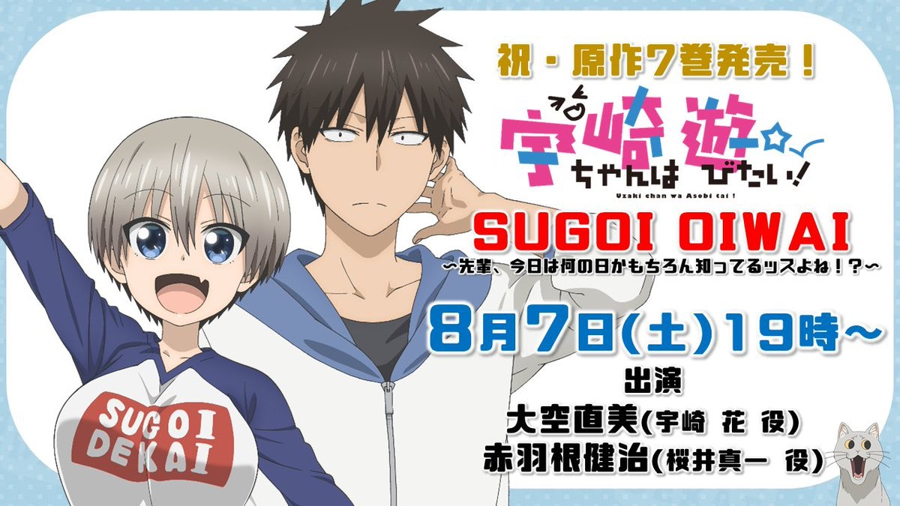
Uzaki-chan Wants to Hang Out!
Anime de comédia e romance
Uzaki-chan Wants to Hang Out! segue a história de Shinichi Sakurai, um estudante universitário introvertido, e Hana Uzaki, uma estudante extrovertida que está sempre tentando fazê-lo sair de casa e se divertir.
Vinland Saga
Anime de ação e histórico
Vinland Saga segue a jornada de Thorfinn, um jovem viking que busca vingança contra o assassino de seu pai enquanto viaja pelo mundo e se envolve em batalhas épicas.
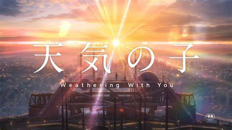
Weathering with You
Anime de romance e drama
Weathering with You segue a história de Hodaka Morishima, um adolescente que foge para Tóquio e conhece uma garota com o poder de controlar o clima.
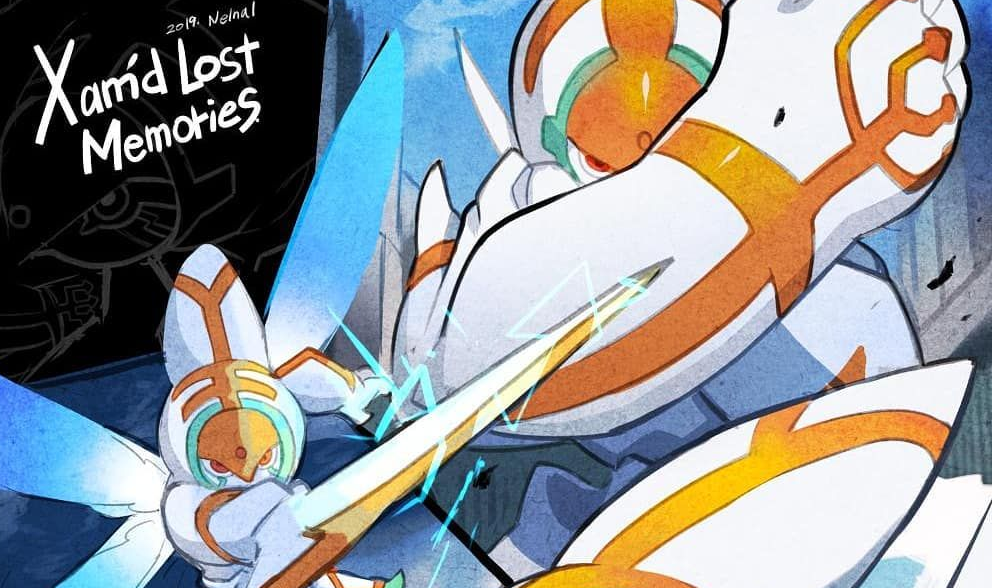
Xam'd: Lost Memories
Anime de ação e ficção científica
Xam'd: Lost Memories segue a jornada de Akiyuki Takehara, que se transforma em uma criatura poderosa conhecida como Xam'd após um ataque terrorista.
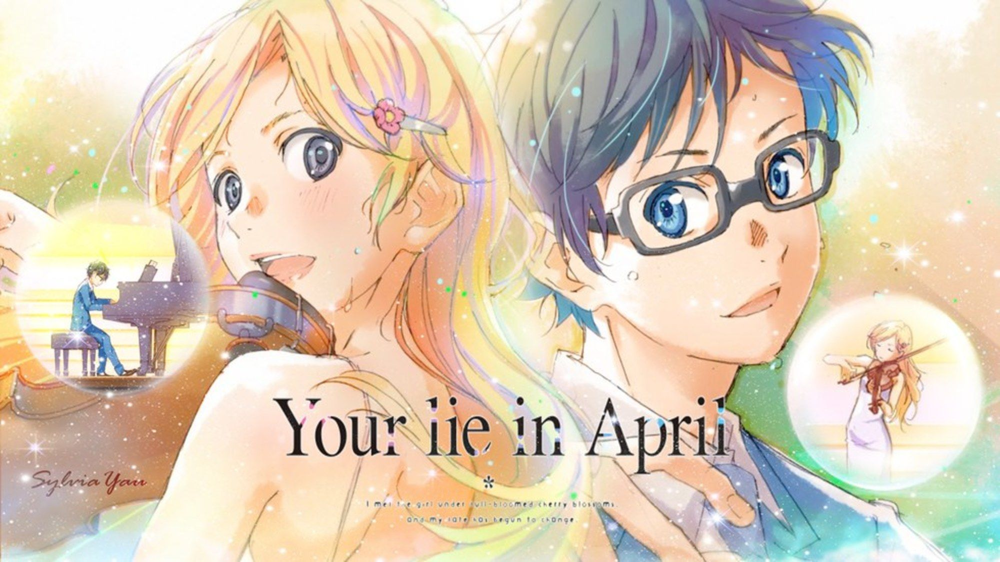
Your Lie in April
Anime de romance e drama
Your Lie in April segue a história de Kousei Arima, um pianista prodígio que perde sua habilidade de tocar após a morte de sua mãe, e Kaori Miyazono, uma violinista que o ajuda a redescobrir sua paixão pela música.
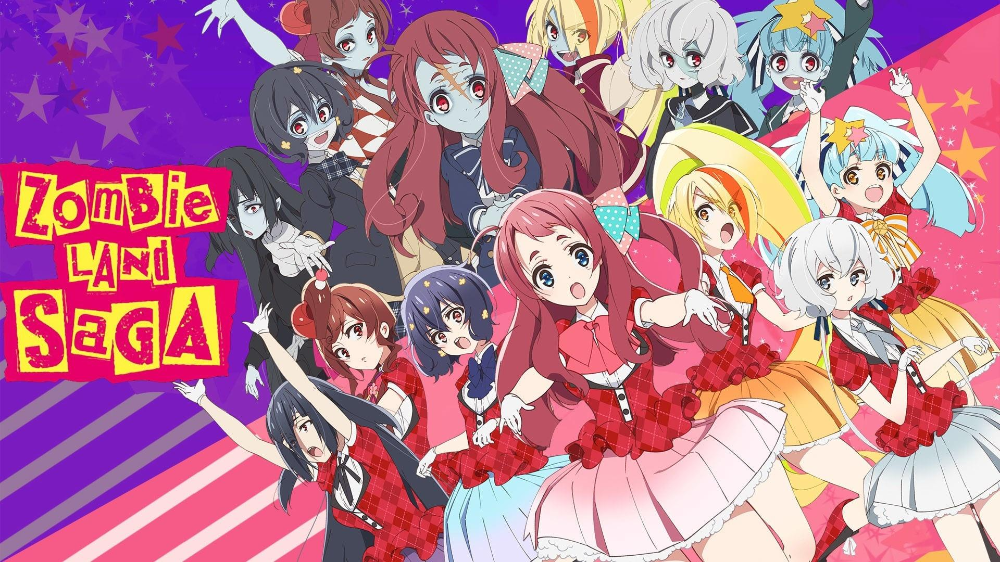
Zombieland Saga
Anime de comédia e zumbis
Zombieland Saga é uma série de anime que segue um grupo de garotas zumbis que formam uma banda de idols para salvar a cidade de Saga do esquecimento.